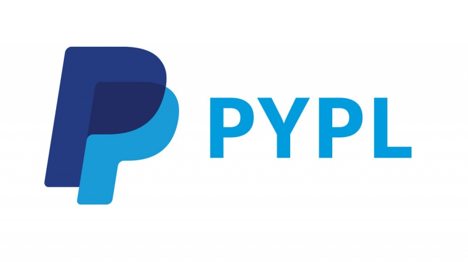

PayPal Holdings, Inc. is an American company operating an online payments system in the majority of countries that support online money transfers, and serves as an electronic alternative to traditional paper methods like checks and money orders. The company operates as a payment processor for online vendors, auction sites, and many other commercial users. It charges a fee in exchange for benefits such as one-click transactions and password memory.
Established in 1998 as Confinity, PayPal had its initial public offering in 2002. It became a wholly owned subsidiary of eBay later that year, valued at $1.5 billion. In 2015, eBay spun off PayPal to eBay's shareholders. The company ranked 204th on the 2019 Fortune 500 of the largest United States corporations by revenue.
PayPal was originally established by Max Levchin, Peter Thiel, and Luke Nosek in December 1998 as Confinity,a company that developed security software for handheld devices. It had no success with that business model, however, so switched its focus to a digital wallet.The first version of the PayPal electronic payments system was launched in 1999. In March 2000, Confinity merged into X.com, an online banking company founded in January 1999 by Elon Musk. Musk was optimistic about the future success of the money transfer business Confinity was developing. Musk and Bill Harris, then-president and CEO of X.com, disagreed about the potential future success of the money transfer business and Harris left the company in May 2000. In October of that year, Musk decided that X.com would terminate its other internet banking operations and focus on PayPal. That same month, Elon Musk was replaced by Peter Thiel as CEO of X.com, which was renamed PayPal in 2001 and went public in 2002. PayPal's IPO listed under the ticker PYPL at $13 per share and generated over $61 million.